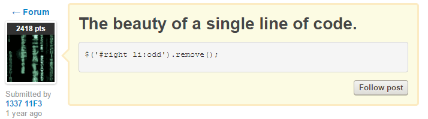

在页面上我们经常见到这样的对话框样式，作为前端需要注意的就是这个箭头的画法。以下是作者积累的几种画法，算是抛砖引玉，欢迎各位通过微博的方式分享更好的做法！
相同之处是都必须用绝对定位实现，第一种无疑是代码量最少的，第二种在需要很多个小三角形的时候有事就比较明显了（写统一的类，只针对各自的框来定位），第三种和第四种实质上是一样的，都是通过内容为空一个border不透明然后定位实现，但第四种更符合ES5标准，因为屏幕阅读器会跳过伪元素。鼠标事件也可以通过pointer-events: none;来禁用掉。
2015.2.10要回家了，趁回家前把code year做完，有时间再美化这个页面